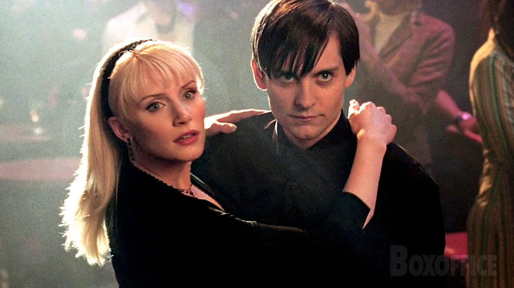
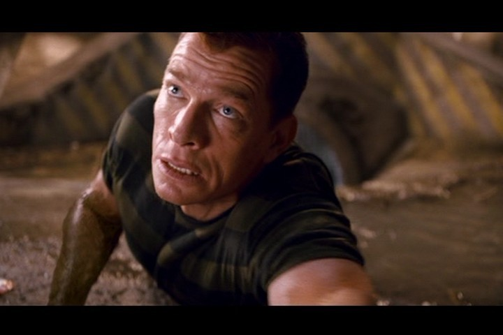

ピーター・パーカー / ブラックスパイダーマン
心の闇に囚われた隣人 // 復讐の黒きスパイダーマン
MJへのプロポーズの失敗や、ベンおじさんを殺した真犯人への怒りに苦しむ中、宇宙の生命体「シンビオート」に寄生される。能力が大幅に強化され攻撃的な黒いスーツへと変貌するが、引き換えに自身の傲慢さと冷酷さが引き出され、周囲の人々を深く傷つけていく。
「復讐ほど甘いものはない……。お前がベンおじさんを殺したんだ。覚悟しろ、フリント！」

ハリー・オズボーン / ニュー・ゴブリン
父の遺志を継ぐ執念の戦士 // 絆を取り戻せし親友
父ノーマンの装備を改良し「ニュー・ゴブリン」としてピーターを急襲する。戦闘の衝撃で一時的に記憶を失い優しい親友に戻るが、記憶を取り戻すと再び復讐の鬼となりMJを脅迫。しかし最後は真実を知り、傷ついた親友ピーターを救うためにグライダーを駆って決戦の地へ現れる。
「親父の仇だ。」

フリント・マルコ / サンドマン
病の娘を救いたい父親 // 砂の巨人
不治の病に冒された娘の治療費を稼ぐため脱獄。逃走中に素粒子融合作戦の実験場に迷い込み、肉体が砂と同化する「サンドマン」となる。ベンおじさんを殺害した過去の真の真相を抱えており、悪人になりきれない苦悩を抱えながら戦う。
「俺は悪い人間じゃない……ただ、運がなかっただけだ。あの日、あんなことになるはずじゃなかった。」
エディ・ブロック / ヴェノム
ピーターを憎むカメラマン // 最凶の怪物
デイリー・ビューグル紙に現れたピーターのライバル。写真を捏造したことをピーターに暴かれ、職とプライドを失う。ピーターへの激しい憎悪に満ちていたところ、ピーターが教会で引き剥がしたシンビオートと融合。最悪のヴィラン「ヴェノム」として覚醒する。
「パーカー、お前の大好きなものを全て奪ってやる。……俺たちがスパイダーマンを殺すんだ！」